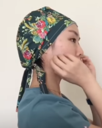

> Home > Scrub Cap

Scrub caps are not standard issue for non-surgical settings, but they are a welcome addition to the standard PPE used by healthcare professionals working
with COVID-19 patients. This cap design is based on the work by Lea at Lea Goes
Green. I have drafted patterns for small-, medium-, and large-sized
caps. The small cap fits a head with a 21" circumference, the medium fits a 22" circumference head, and the large fits a 23" circumference head.
A half yard of standard quilting cotton fabric is 18” x 44”. You can make two caps from a half yard
of quilting cotton. A fat quarter is a piece of quilting cotton that is 18” x 22”. You can make one cap from a fat quarter but the band will have a seam
at the center front.
Instructions: Scrub Cap Instructions (.pdf)
Pattern: Scrub Cap Pattern (.pdf)